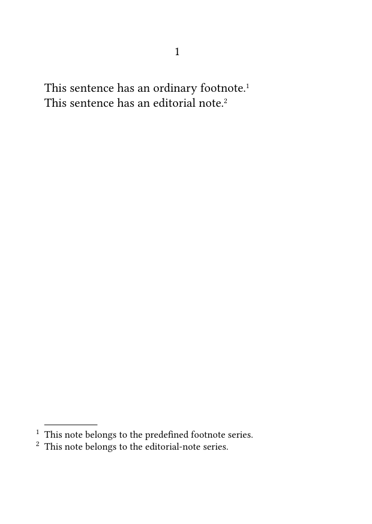
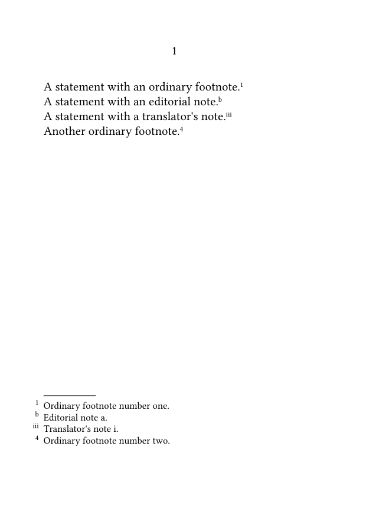
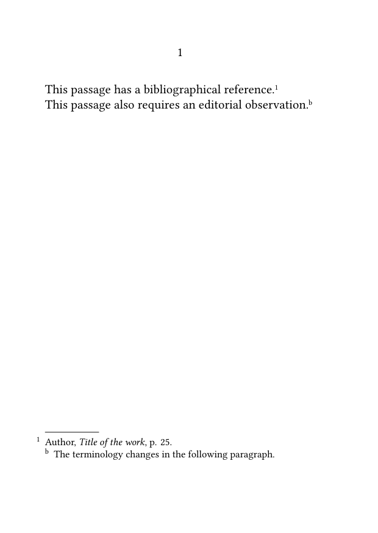
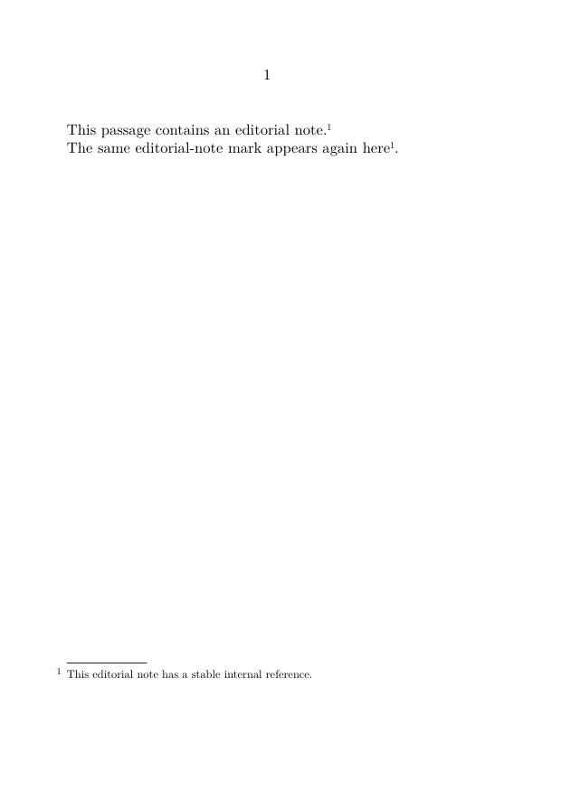
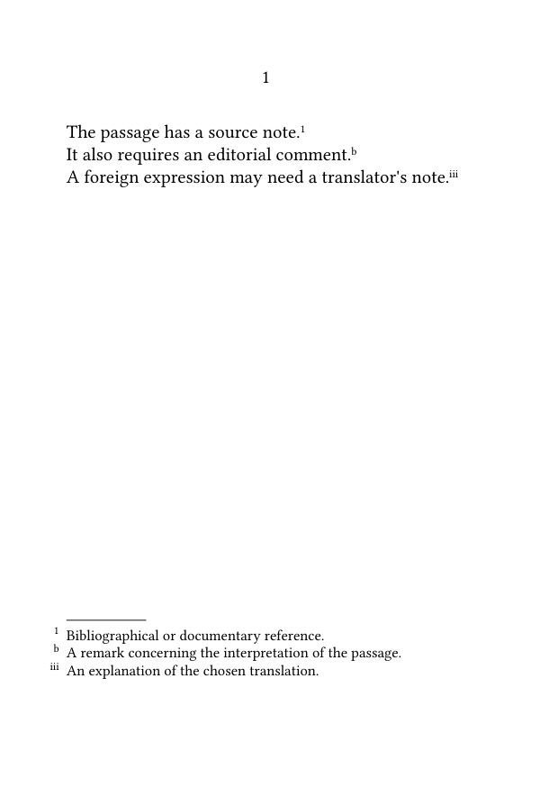
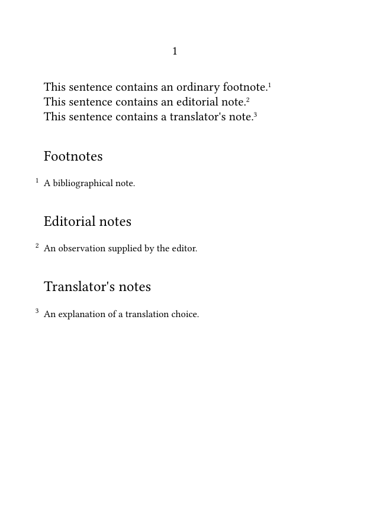
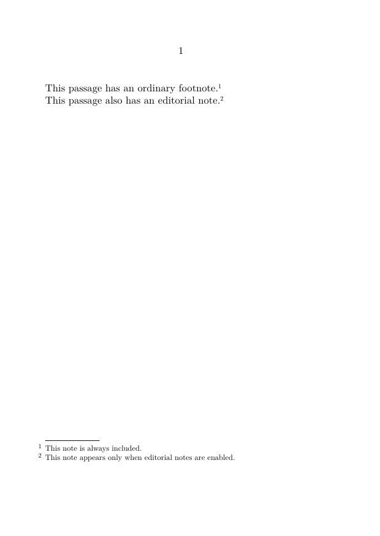
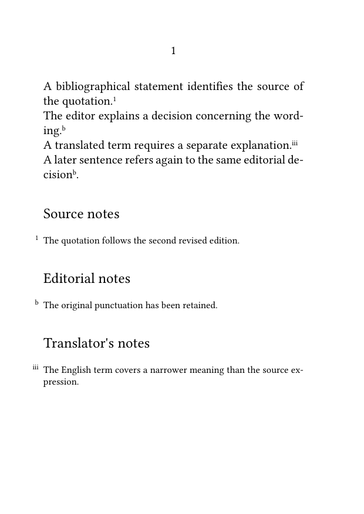

Footnotes in ConTeXt · Overview · Tutorial · How-to guides · Defining and managing multiple note series · Reference · Explanation · Glossary
🚧 Under construction — This guide is currently being revised. Please do not modify its source code while this banner remains in place.
Guide 5 — Multiple note series · Previous: Placing footnotes at the end of a section or chapter · How-to guides overview · Next: Placing numbered notes in the margin
Contents
- 1 1. Goal
- 2 2. Decide whether a separate series is needed
- 3 3. Define a new note series
- 4 4. Configure numbering and counter resets
- 5 5. Configure each series independently
- 6 6. Use stable references in a custom series
- 7 7. Define several editorial series
- 8 8. Place several series explicitly
- 9 9. Let several series share one placement area
- 10 10. Prepare selective editions
-
11
11. Common mistakes
- 11.1 11.1. Defining a visual difference instead of an editorial category
- 11.2 11.2. Using inconsistent series names
- 11.3 11.3. Expecting one counter to control every series
- 11.4 11.4. Using \placefootnotes for a custom series
- 11.5 11.5. Recalling a custom note without its series name
- 11.6 11.6. Using a nonexistent series-specific text command
- 12 12. Complete example
- 13 13. What this guide has established
- 14 14. Next steps
1. Goal
Define several independent note series for distinct editorial purposes.
A publication may need to distinguish, for example:
- ordinary bibliographical footnotes;
- notes supplied by an editor;
- notes supplied by a translator;
- source notes;
- linguistic glosses;
- textual variants.
Each note series can have its own:
- command;
- counter;
- numbering style;
- reset level;
- body font and layout;
- placement settings;
- placement command;
- stable internal references.
Result
Note series with different editorial functions remain structurally independent, even when their entries share the same placement area.
2. Decide whether a separate series is needed
A separate note series should represent a genuine distinction in the document.
Use several series when notes differ by:
- editorial function;
- numbering sequence;
- placement;
- formatting requirements;
- inclusion in different published versions.
For example, a translator's explanation and a textual variant may both appear below the text, but they do not perform the same editorial function.
Function comes before appearance
Define a new series because the notes mean something different, not merely because they use another colour, size, or font.
A single series is usually sufficient when all notes:
- serve the same purpose;
- follow the same numbering;
- appear in the same place;
- are included or omitted together.
3. Define a new note series
Use \definenote:
\definenote [EdNote] [footnote]
This defines a new note series named EdNote, inheriting its basic behaviour from the predefined footnote series.
It also creates the command:
\EdNote{note text}
3.1. MWE: define an editorial-note series
-
\setuppapersize[A6] \setupbodyfont [libertinus,10pt] \definenote [EdNote] [footnote] \starttext This sentence has an ordinary footnote.\footnote {This note belongs to the predefined footnote series.} This sentence has an editorial note.\EdNote {This note belongs to the editorial-note series.} \stoptext
-

The two entries belong to different series and therefore have independent counters.
3.2. Choose a meaningful series name
Useful names include:
EdNote TradNote SourceNote GlossNote VariantNote
These names continue to express the function of the notes even when the visual design changes.
Avoid names such as:
RedNote SmallNote MarginNoteTwo
unless the name genuinely identifies a permanent editorial category.
Choose command names carefully
The series name becomes both an internal identifier and a ConTeXt command.
Use a clear name without spaces, and preserve the same capitalization throughout the source.
4. Configure numbering and counter resets
Each note series has its own counter and can use its own printed numbering system.
4.1. Give each series its own numbering
Configure the printed form with \setupnotation.
In the following example:
- ordinary footnotes use Arabic numerals;
- editorial notes use lowercase letters;
- translator's notes use Roman numerals.
-
\setuppapersize[A6] \setupbodyfont [libertinus,10pt] \definenote [EdNote] [footnote] \definenote [TradNote] [footnote] \setupnotation [footnote] [numberconversion=numbers] \setupnotation [EdNote] [numberconversion=characters] \setupnotation [TradNote] [numberconversion=romannumerals] \starttext A statement with an ordinary footnote.\footnote {Ordinary footnote number one.} A statement with an editorial note.\EdNote {Editorial note a.} A statement with a translator's note.\TradNote {Translator's note i.} Another ordinary footnote.\footnote {Ordinary footnote number two.} \stoptext
-

Adding an EdNote or TradNote does not advance the ordinary footnote counter.
Independent counters
Each note series maintains its own sequence.
This is one of the principal reasons for defining separate series.
4.2. Reset each counter at the appropriate level
The way key can be configured independently for every series.
For example:
\setupnotation [footnote] [way=bychapter] \setupnotation [EdNote] [way=bychapter] \setupnotation [TradNote] [way=bysection]
In this arrangement:
- ordinary footnotes restart in every chapter;
- editorial notes also restart in every chapter;
- translator's notes restart in every section.
Reset level and placement are separate
The way key controls the numbering sequence.
It does not determine where the note entries are printed.
Choose the reset level according to the structure and conventions of the publication.
5. Configure each series independently
Use \setupnote for series-wide handling and \setupnotation for the visible presentation of entries and numbers.
5.1. MWE: independent formatting
-
\setuppapersize[A6] \setupbodyfont [libertinus,10pt] \definenote [EdNote] [footnote] \setupnote [footnote] [bodyfont=small] \setupnotation [footnote] [numberconversion=numbers] \setupnote [EdNote] [bodyfont=small] \setupnotation [EdNote] [numberconversion=characters, alternative=serried] \starttext This passage has a bibliographical reference.\footnote {Author, \emph{Title of the work}, p. 25.} This passage also requires an editorial observation.\EdNote {The terminology changes in the following paragraph.} \stoptext
-

The series name must match in every command:
\definenote [EdNote] [footnote] \setupnote [EdNote] [...] \setupnotation [EdNote] [...]
For a fuller treatment of presentation settings, see:
Series names are case-sensitive
EdNote, ednote, and EDNOTE identify different names.
6. Use stable references in a custom series
A custom note can receive a stable internal reference:
\EdNote[reference]{note text}
6.1. Recall a custom note mark
Recall the same mark with the generic command:
\note[EdNote][reference]
-
\setuppapersize[A6] \definenote [EdNote] [footnote] \starttext This passage contains an editorial note.\EdNote[ed:terminology] {This editorial note has a stable internal reference.} The same editorial-note mark appears again here \note[EdNote][ed:terminology]. \stoptext
-

The two arguments of \note identify:
- the note series;
- the stable internal reference.
For the predefined footnote series, the abbreviated form remains available:
\note[reference]
For more detail, see:
6.2. Separate the mark from the note text
Use the generic commands:
\note[series][reference]
\setnotetext
[series]
[reference]
{note text}
-
\setuppapersize[A6] \definenote [EdNote] [footnote] \starttext This sentence contains an editorial-note mark \note[EdNote][ed:manual]. \setnotetext [EdNote] [ed:manual] {This editorial note text is registered separately.} \stoptext
-

Use the generic text command
For a custom series, register separate note text with \setnotetext[series][reference]{...}.
For the complete procedure, see:
7. Define several editorial series
Several note series can coexist in one document.
7.1. MWE: source, editorial, and translator's notes
-
\setuppapersize[A6] \setupbodyfont [libertinus,10pt] \definenote [SourceNote] [footnote] \definenote [EdNote] [footnote] \definenote [TradNote] [footnote] \setupnotation [SourceNote] [numberconversion=numbers] \setupnotation [EdNote] [numberconversion=characters] \setupnotation [TradNote] [numberconversion=romannumerals] \starttext The passage has a source note.\SourceNote {Bibliographical or documentary reference.} It also requires an editorial comment.\EdNote {A remark concerning the interpretation of the passage.} A foreign expression may need a translator's note.\TradNote {An explanation of the chosen translation.} \stoptext
-

The source now expresses the editorial function directly:
\SourceNote{...}
\EdNote{...}
\TradNote{...}
This is clearer than using one generic \footnote command for every category.
8. Place several series explicitly
A custom series can be postponed with location=text and placed with \placenotes[series].
8.1. MWE: separate note blocks
-
\setuppapersize[A6] \setupbodyfont [libertinus,10pt] \definenote [EdNote] [footnote] \definenote [TradNote] [footnote] \setupnote [footnote] [location=text] \setupnote [EdNote] [location=text] \setupnote [TradNote] [location=text] \starttext This sentence contains an ordinary footnote.\footnote {A bibliographical note.} This sentence contains an editorial note.\EdNote {An observation supplied by the editor.} This sentence contains a translator's note.\TradNote {An explanation of a translation choice.} \subject{Footnotes} \placefootnotes \subject{Editorial notes} \placenotes[EdNote] \subject{Translator's notes} \placenotes[TradNote] \stoptext
-

The predefined series uses:
\placefootnotes
A custom series uses:
\placenotes[series]
The note blocks appear in the order of their placement commands.
Separate placement makes the editorial structure visible
Distinct headings and placement commands can produce clearly separated note blocks for the reader.
For more detail on postponed placement, see:
If custom series inherit from footnote and retain ordinary page placement, their entries may appear in the page-note area together with predefined footnotes.
This is useful when:
- the categories must remain structurally distinct;
- each series needs an independent counter;
- all entries may share the same general placement area.
Separate note series do not automatically produce visibly separated apparatus levels.
The final appearance depends on their formatting and placement settings.
Structural distinction and visual separation are different questions
Defining several series separates their commands, data, and counters.
Producing separate visible blocks additionally requires explicit placement or other layout settings.
10. Prepare selective editions
Semantic note commands make it easier to produce several versions from the same source.
For example, editorial notes can be controlled through a conditional wrapper.
10.1. MWE: include or suppress editorial notes
-
\setuppapersize[A6] \definenote [EdNote] [footnote] \newconditional\showeditorialnotes \settrue\showeditorialnotes \define[1]\EditorialNote {\ifconditional\showeditorialnotes \EdNote{#1} \fi} \starttext This passage has an ordinary footnote.\footnote {This note is always included.} This passage also has an editorial note.\EditorialNote {This note appears only when editorial notes are enabled.} \stoptext
-

Changing:
\settrue\showeditorialnotes
to:
\setfalse\showeditorialnotes
suppresses the notes created through \EditorialNote while leaving ordinary footnotes active.
Filter semantic commands, not visual formatting
The conditional controls a command that represents an editorial function.
It does not merely hide notes according to their appearance.
For a fuller treatment, see:
11. Common mistakes
11.1. Defining a visual difference instead of an editorial category
Do not create a new series only because one group of notes is temporarily blue, smaller, or placed elsewhere.
Create a new series when the notes have a different function, counter, placement policy, or inclusion rule.
11.2. Using inconsistent series names
This does not configure the defined series:
\definenote [EdNote] [footnote] \setupnotation [ednote] [numberconversion=characters]
Use EdNote consistently.
11.3. Expecting one counter to control every series
Each defined series has its own counter.
Configure its numbering and reset level explicitly when needed.
11.4. Using
\placefootnotes
for a custom series
Use:
\placenotes[EdNote]
for a custom series.
11.5. Recalling a custom note without its series name
Use:
\note[EdNote][ed:reference]
The abbreviated form \note[reference] belongs to the predefined footnote series.
11.6. Using a nonexistent series-specific text command
Do not assume that a command such as \EdNotetext exists.
Use:
\setnotetext
[EdNote]
[reference]
{note text}
Most frequent source of errors
A note series must be identified consistently in its definition, configuration, references, and placement commands.
12. Complete example
The following MWE combines:
- three editorial note series;
- independent counters;
- distinct numbering conversions;
- stable internal references;
- reuse of a custom note mark;
- postponed placement;
- separate note blocks in a chosen order.
12.1. MWE: three independently managed note series
-
\setuppapersize[A6] \setupbodyfont [libertinus,10pt] \definenote [SourceNote] [footnote] \definenote [EdNote] [footnote] \definenote [TradNote] [footnote] \setupnote [SourceNote] [location=text, bodyfont=small] \setupnote [EdNote] [location=text, bodyfont=small] \setupnote [TradNote] [location=text, bodyfont=small] \setupnotation [SourceNote] [numberconversion=numbers] \setupnotation [EdNote] [numberconversion=characters] \setupnotation [TradNote] [numberconversion=romannumerals] \starttext A bibliographical statement identifies the source of the quotation.\SourceNote[source:edition] {The quotation follows the second revised edition.} The editor explains a decision concerning the wording.\EdNote[ed:wording] {The original punctuation has been retained.} A translated term requires a separate explanation.\TradNote {The English term covers a narrower meaning than the source expression.} A later sentence refers again to the same editorial decision \note[EdNote][ed:wording]. \subject{Source notes} \placenotes[SourceNote] \subject{Editorial notes} \placenotes[EdNote] \subject{Translator's notes} \placenotes[TradNote] \stoptext
-

Compile the example and check that:
- source notes use Arabic numerals;
- editorial notes use lowercase letters;
- translator's notes use Roman numerals;
- each series maintains its own counter;
- the editorial-note mark is printed twice but creates only one entry;
- the three note blocks appear in the chosen order;
- all note entries use the smaller body font.
13. What this guide has established
To define and manage several note series:
- decide whether the notes represent genuinely different editorial functions;
-
define each series with
\definenote[name][footnote]; - choose names that express those functions;
-
configure each series independently with
\setupnoteand\setupnotation; - assign stable internal references when a note must be recalled;
-
use
\note[series][reference]for a custom series; -
use
\setnotetext[series][reference]{...}when mark and note text are created separately; -
use
\placenotes[series]for explicit placement; - use semantic wrapper commands when producing selective editions.
The central principle is that a note series represents a structural and editorial category, not merely a visual variation.
14. Next steps
14.1. Continue with the next guide
- Format footnotes
- Place footnotes at the end of a section or chapter
- Use local notes in tables, floats, and boxes
- Produce annotated and unannotated versions
14.3. Consult the documentation
- Consult the note-command reference
- Understand the note mechanism
- Check the terminology used in the footnote documentation
Guide 5 — Multiple note series · Previous: Placing footnotes at the end of a section or chapter · How-to guides overview · Next: Placing numbered notes in the margin
Footnotes in ConTeXt · Overview · Tutorial · How-to guides · Defining and managing multiple note series · Reference · Explanation · Glossary